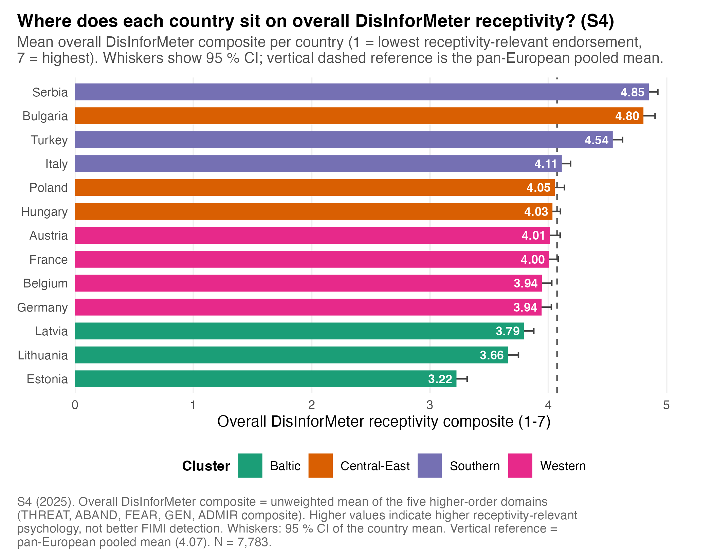
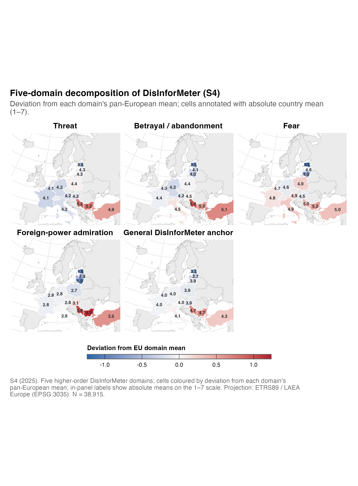
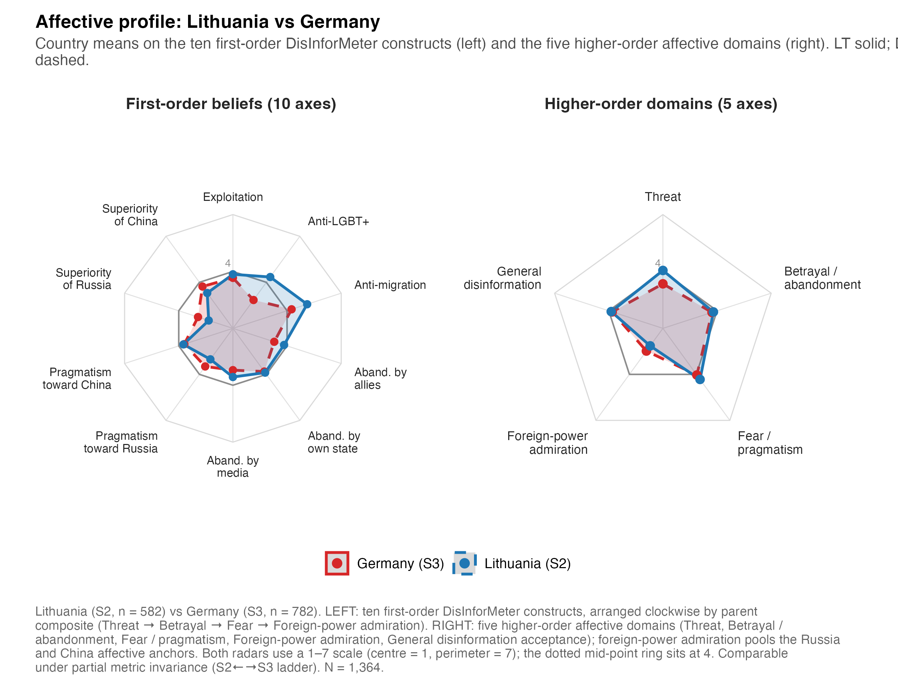
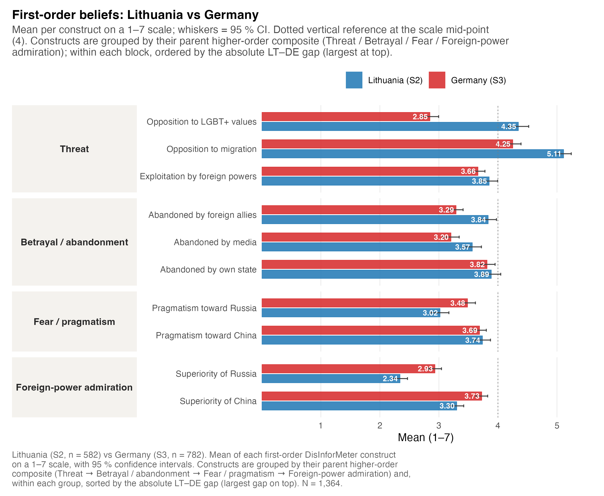
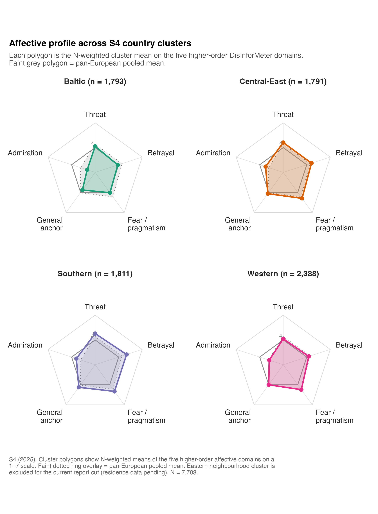
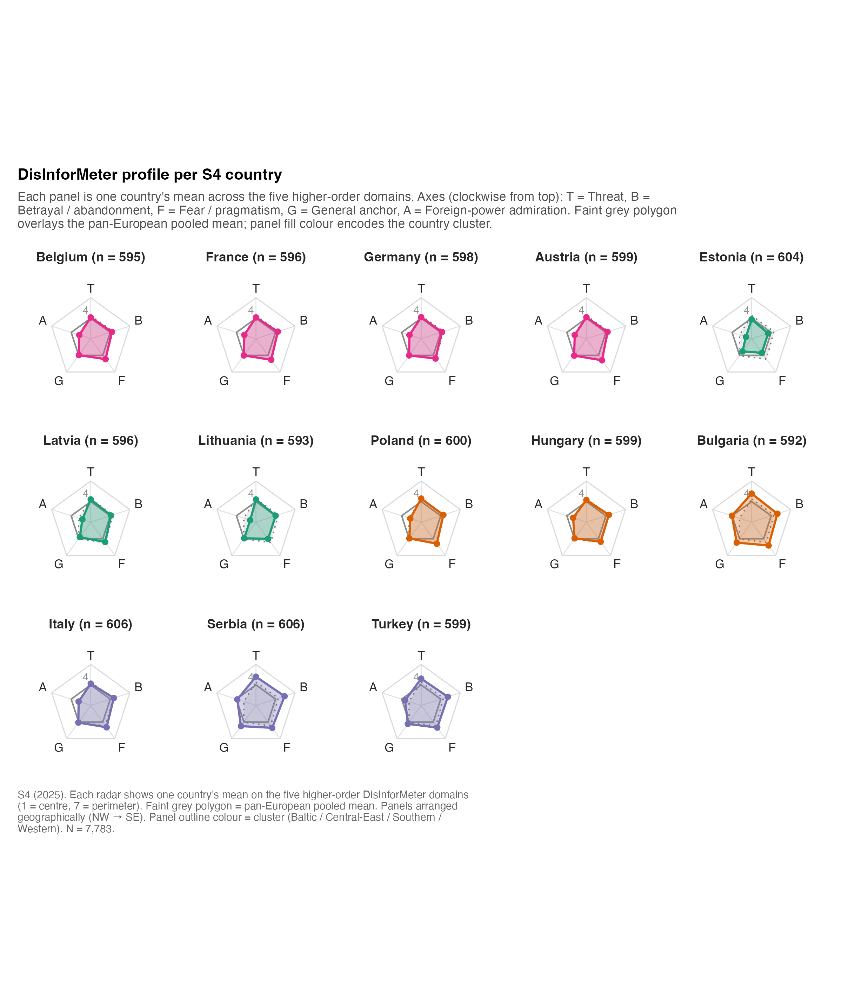

Receptivity profiles
Overall DisInforMeter endorsement and the five-domain affective profiles that sit beneath it
What “receptivity” means here
This page plots the DisInforMeter domains — Threat, Betrayal/Abandonment, Fear/Pragmatism, Foreign-Power Admiration, and the General Anchor. Higher = more receptivity-relevant endorsement. This is not a detection score, and it is the opposite direction to the FIMI detection maps. A country can detect FIMI well while still scoring high on some receptivity domains, and the two should never be collapsed into one number.
Overall receptivity differs systematically across Europe
The overall DisInforMeter composite averages the five higher-order domains (z-scored, rescaled to 1–7). The Baltic countries sit lowest — Estonia (3.22), Lithuania (3.66), Latvia (3.79) — while Serbia (4.85), Bulgaria (4.80), and Turkey (4.54) sit highest. This pattern should guide follow-up diagnosis; it is not a stand-alone risk ranking.
| Country | Cluster | N | Overall composite | 95% CI |
|---|---|---|---|---|
| Serbia | Southern | 606 | 4.85 | [4.77, 4.93] |
| Bulgaria | Central-East | 592 | 4.80 | [4.70, 4.90] |
| Turkey | Southern | 599 | 4.54 | [4.45, 4.63] |
| Italy | Southern | 606 | 4.11 | [4.04, 4.19] |
| Poland | Central-East | 600 | 4.05 | [3.97, 4.14] |
| Hungary | Central-East | 599 | 4.03 | [3.97, 4.10] |
| Austria | Western | 599 | 4.01 | [3.92, 4.10] |
| France | Western | 596 | 4.00 | [3.92, 4.08] |
| Belgium | Western | 595 | 3.94 | [3.85, 4.03] |
| Germany | Western | 598 | 3.94 | [3.85, 4.03] |
| Latvia | Baltic | 596 | 3.79 | [3.70, 3.88] |
| Lithuania | Baltic | 593 | 3.66 | [3.57, 3.75] |
| Estonia | Baltic | 604 | 3.22 | [3.13, 3.31] |
Code
scripts/policy_report/F-08_overall_ranked_bar.R
#!/usr/bin/env Rscript
#' F-08 — Ranked horizontal bar chart: countries by overall DisInforMeter receptivity.
#'
#' Spec: country names left-aligned, mean on x, descending rank top-to-bottom,
#' 95 % CI whiskers, EU-mean vertical reference line, value labels at the bar
#' right edge.
#'
#' Source CSV: outputs/policy_report/tables/s4_country_means_higherorder.csv
#' (filtered to construct_id == "overall")
#' outputs/policy_report/tables/s4_eu_pooled_benchmarks.csv
#' (Overall composite EU mean)
#' Output: outputs/policy_report/figures/F-08_overall_ranked_bar.{png,pdf,rds}
suppressPackageStartupMessages({
library(ggplot2)
library(dplyr)
library(readr)
library(here)
})
source(here::here("scripts", "policy_report", "_theme.R"))
SCRIPT_ID <- "F-08_overall_ranked_bar"
SOURCE_CSV <- here::here("outputs", "policy_report", "tables",
"s4_country_means_higherorder.csv")
EU_CSV <- here::here("outputs", "policy_report", "tables",
"s4_eu_pooled_benchmarks.csv")
OUT_BASE <- file.path(POLICY_REPORT_FIG_DIR, SCRIPT_ID)
set.seed(42)
dat_all <- readr::read_csv(SOURCE_CSV, show_col_types = FALSE)
policy_report_check_input(dat_all, SOURCE_CSV)
dat <- dat_all %>% dplyr::filter(construct_id == "overall")
if (nrow(dat) == 0L) {
stop("F-08: zero rows after filtering to construct_id == 'overall'.",
call. = FALSE)
}
eu <- readr::read_csv(EU_CSV, show_col_types = FALSE)
eu_mean <- eu %>%
dplyr::filter(construct_id == "overall") %>%
dplyr::pull(mean)
if (length(eu_mean) != 1L || is.na(eu_mean)) {
stop("F-08: could not locate EU pooled overall composite mean.", call. = FALSE)
}
# Cluster palette -- shared categorical palette so colour matches other
# cluster-coded figures (F-16, country snapshots).
cluster_levels <- c("Baltic", "Central-East", "Southern", "Western")
cluster_cols <- setNames(policy_report_palette("categorical",
n = length(cluster_levels)),
cluster_levels)
dat <- dat %>%
dplyr::mutate(
cluster = factor(cluster, levels = cluster_levels),
country_name = forcats::fct_reorder(country_name, mean)
)
n_total <- sum(dat$n)
caption <- policy_report_caption(
source = "outputs/policy_report/tables/s4_country_means_higherorder.csv",
n = n_total,
script = paste0(SCRIPT_ID, ".R"),
prefix = sprintf("S4 (2025). Overall DisInforMeter composite = unweighted mean of the five higher-order domains (THREAT, ABAND, FEAR, GEN, ADMIR composite). Higher values indicate higher receptivity-relevant psychology, not better FIMI detection. Whiskers: 95 %% CI of the country mean. Vertical reference = pan-European pooled mean (%.2f).",
eu_mean))
p <- ggplot2::ggplot(dat,
ggplot2::aes(x = mean, y = country_name,
colour = cluster, fill = cluster)) +
ggplot2::geom_vline(xintercept = eu_mean, linetype = "dashed",
colour = "grey35", linewidth = 0.5) +
# Draw the CI whisker BEFORE the bar so the opaque coloured column masks the
# inside (left) half of the whisker; only the portion extending past the bar
# end (i.e. to the right, outside the bar) remains visible. This keeps the
# full symmetric 95 % CI in the geometry while ensuring the visible whisker
# never overlaps the white value label that sits inside the bar.
ggplot2::geom_errorbarh(
ggplot2::aes(xmin = ci_lower, xmax = ci_upper),
height = 0.25, colour = "grey25", linewidth = 0.5
) +
ggplot2::geom_col(width = 0.68, alpha = 1, linewidth = 0.2) +
# Value label placed INSIDE the bar (right-aligned at the end of the
# coloured fill). Because the bar is now fully opaque and drawn over the
# inside half of the whisker, the label never collides with a visible CI
# whisker or runs off the right edge of the panel.
ggplot2::geom_text(
ggplot2::aes(label = sprintf("%.2f", mean)),
hjust = 1.15, size = 3.1, colour = "white", fontface = "bold",
family = .policy_report_resolve_font(POLICY_REPORT_BASE_FONT)
) +
ggplot2::scale_colour_manual(values = cluster_cols, name = "Cluster") +
ggplot2::scale_fill_manual(values = cluster_cols, name = "Cluster") +
ggplot2::scale_x_continuous(
limits = c(0, max(dat$ci_upper) * 1.04),
breaks = seq(0, 7, 1),
expand = ggplot2::expansion(mult = c(0, 0.02))
) +
ggplot2::labs(
title = "Where does each country sit on overall DisInforMeter receptivity? (S4)",
subtitle = policy_report_wrap("Mean overall DisInforMeter composite per country (1 = lowest receptivity-relevant endorsement, 7 = highest). Whiskers show 95 % CI; vertical dashed reference is the pan-European pooled mean.", width = 95),
x = "Overall DisInforMeter receptivity composite (1-7)",
y = NULL,
caption = caption
) +
theme_policy_report(base_size = 11) +
ggplot2::theme(
panel.grid.major.y = ggplot2::element_blank(),
panel.grid.major.x = ggplot2::element_line(colour = "grey94")
)
dim_p <- POLICY_REPORT_FIGURE_DIMENSIONS$half_page
paths <- safe_ggsave_rds(p, OUT_BASE,
width = dim_p$width,
height = dim_p$height + 1.0)
policy_report_log_outputs(
SCRIPT_ID, paths, input_rows = nrow(dat),
extra = c(sprintf("EU mean (overall DisInforMeter): %.3f", eu_mean),
sprintf("Country range: [%.2f, %.2f]",
min(dat$mean), max(dat$mean)),
sprintf("N retained: %s", format(n_total, big.mark = ",")),
sprintf("Top 3: %s",
paste(dat %>% dplyr::arrange(dplyr::desc(mean)) %>%
dplyr::slice_head(n = 3) %>% dplyr::pull(country_name),
collapse = ", "))))Domains drive different countries differently
The same overall score can sit on very different psychological profiles. Serbia and Bulgaria are high across Threat, Betrayal/Abandonment, Fear/Pragmatism, and Foreign-Power Admiration; the Baltic countries are lower on overall endorsement and especially low on Foreign-Power Admiration, while also showing high FIMI detection. The Western cluster sits near the pooled mean on the composite but carries source-specific detection blind spots. The domain maps prevent a one-dimensional reading of country risk.

| Country | Cluster | Betrayal/Aband. | Admiration | Fear/Pragm. | General | Threat |
|---|---|---|---|---|---|---|
| Estonia | Baltic | 3.54 | 1.88 | 3.53 | 3.29 | 3.83 |
| Latvia | Baltic | 4.12 | 2.29 | 4.60 | 3.71 | 4.32 |
| Lithuania | Baltic | 4.02 | 1.89 | 4.02 | 3.92 | 4.31 |
| Bulgaria | Central-East | 4.96 | 4.03 | 5.21 | 4.70 | 5.17 |
| Hungary | Central-East | 4.46 | 3.05 | 4.55 | 3.93 | 4.24 |
| Poland | Central-East | 4.41 | 2.68 | 4.90 | 3.94 | 4.44 |
| Italy | Southern | 4.54 | 2.86 | 4.94 | 4.09 | 4.19 |
| Serbia | Southern | 5.40 | 3.88 | 5.04 | 4.73 | 5.21 |
| Turkey | Southern | 5.10 | 3.46 | 4.99 | 4.32 | 4.92 |
| Austria | Western | 4.24 | 2.80 | 4.89 | 4.04 | 4.15 |
| Belgium | Western | 4.25 | 2.76 | 4.69 | 3.95 | 4.12 |
| France | Western | 4.36 | 2.78 | 4.80 | 4.01 | 4.12 |
| Germany | Western | 4.19 | 2.80 | 4.57 | 4.00 | 4.16 |
Code
scripts/policy_report/F-09_domain_choropleth_small_multiples.R
#!/usr/bin/env Rscript
#' F-09 — Five-domain choropleth small multiples.
#'
#' Spec: 2×3 grid (5 maps + a legend tile) sharing a single diverging scale;
#' EPSG:3035 Lambert Azimuthal Europe projection.
#'
#' Source: outputs/policy_report/tables/s4_country_means_byconstruct_long.csv
#' outputs/policy_report/tables/s4_eu_pooled_benchmarks.csv (EU mean per construct)
#' Output: outputs/policy_report/figures/F-09_domain_choropleth_small_multiples.{png,pdf,rds}
suppressPackageStartupMessages({
library(ggplot2)
library(dplyr)
library(readr)
library(sf)
library(here)
library(patchwork)
})
source(here::here("scripts", "policy_report", "_theme.R"))
source(here::here("scripts", "policy_report", "_helpers_geo.R"))
SCRIPT_ID <- "F-09_domain_choropleth_small_multiples"
SOURCE_CSV <- here::here("outputs", "policy_report", "tables",
"s4_country_means_byconstruct_long.csv")
EU_CSV <- here::here("outputs", "policy_report", "tables",
"s4_eu_pooled_benchmarks.csv")
OUT_BASE <- file.path(POLICY_REPORT_FIG_DIR, SCRIPT_ID)
set.seed(42)
# Five-domain set per spec.
DOMAINS <- c("threat", "aband", "fear", "admir", "gen")
DOMAIN_LABELS <- c(
threat = "Threat",
aband = "Betrayal / abandonment",
fear = "Fear",
admir = "Foreign-power admiration",
gen = "General DisInforMeter anchor"
)
# ---------------------------------------------------------------------------
# Load
# ---------------------------------------------------------------------------
dat_all <- readr::read_csv(SOURCE_CSV, show_col_types = FALSE)
policy_report_check_input(dat_all, SOURCE_CSV)
# `admir` may not exist for S4 means table; use `admir` if present, else fall
# back to the composite by averaging supf + supfch. We rely on the canonical
# upstream output (`R/policy_report/01_country_means_higherorder.R`).
if (!"admir" %in% dat_all$construct_id) {
pooled <- dat_all %>%
dplyr::filter(construct_id %in% c("supf", "supfch")) %>%
dplyr::group_by(country_iso3, country_name, cluster) %>%
dplyr::summarise(mean = mean(mean, na.rm = TRUE),
n = round(mean(n, na.rm = TRUE)),
sd = mean(sd, na.rm = TRUE),
se = mean(se, na.rm = TRUE) / sqrt(2),
ci_lower = mean - 1.96 * se,
ci_upper = mean + 1.96 * se,
scale_min = 1, scale_max = 7,
.groups = "drop") %>%
dplyr::mutate(construct_id = "admir",
construct_label = "Foreign-power admiration",
construct_family = "higher_order")
dat_all <- dplyr::bind_rows(dat_all, pooled)
}
dat <- dat_all %>%
dplyr::filter(construct_id %in% DOMAINS)
if (nrow(dat) == 0L) {
stop("F-09: zero rows after filtering to five-domain set.", call. = FALSE)
}
eu <- readr::read_csv(EU_CSV, show_col_types = FALSE) %>%
dplyr::filter(construct_id %in% DOMAINS) %>%
dplyr::transmute(domain = construct_id, eu_mean = mean)
# Build a shared diverging scale: centre each panel on its own EU mean by
# *normalising* the value (subtract EU mean) so a single scale works.
dat <- dat %>%
dplyr::left_join(eu, by = c("construct_id" = "domain")) %>%
dplyr::mutate(value_delta = mean - eu_mean,
domain_label = factor(construct_id, levels = DOMAINS,
labels = DOMAIN_LABELS[DOMAINS]))
abs_max <- max(abs(dat$value_delta), na.rm = TRUE) * 1.05
shared_scale <- ggplot2::scale_fill_gradient2(
name = "Deviation from EU domain mean",
low = "#2166AC", mid = "#F7F7F7", high = "#B2182B",
midpoint = 0,
limits = c(-abs_max, abs_max),
na.value = "grey90",
guide = ggplot2::guide_colorbar(
title.position = "top",
barwidth = ggplot2::unit(18, "lines"),
barheight = ggplot2::unit(0.45, "lines"),
ticks.colour = "black",
frame.colour = "grey40"
)
)
# Build one map per domain.
plots <- list()
join_misses <- list()
for (i in seq_along(DOMAINS)) {
did <- DOMAINS[i]
lab <- DOMAIN_LABELS[[did]]
sub <- dat %>% dplyr::filter(construct_id == did)
# In-panel labels: absolute mean (not delta) for readability.
values <- sub %>%
dplyr::transmute(country_iso3, value_delta, label_value = mean)
pp <- build_choropleth(
values = values,
value_col = "value_delta",
scale = shared_scale,
label_fmt = NULL, # we add absolute-value labels manually
script_id = paste0(SCRIPT_ID, "/", lab)
)
# Add country labels showing the *absolute* mean (one decimal). Use
# `policy_report_label_points()` (largest-polygon + point-on-surface) rather
# than a raw `st_centroid()`: the latter places multi-part features such as
# France (mainland + overseas territories) out in the Atlantic, which lands
# the label over Portugal. This matches F-07/F-10/F-11/F-12.
geoms <- load_country_geometries()
s4 <- geoms$s4 %>% dplyr::left_join(values, by = "country_iso3")
s4_lbl <- s4 %>% dplyr::filter(in_s4 & !is.na(label_value))
if (nrow(s4_lbl) > 0L) {
lbl_pts <- policy_report_label_points(s4_lbl)
lbl_pts$.lbl <- sprintf("%.1f", lbl_pts$label_value)
pp <- pp + ggplot2::geom_text(
data = lbl_pts,
ggplot2::aes(x = .x, y = .y, label = .lbl),
family = .policy_report_resolve_font(POLICY_REPORT_BASE_FONT),
size = 2.2, colour = "grey15", fontface = "bold"
)
}
pp <- pp +
ggplot2::labs(title = lab) +
ggplot2::theme(plot.title = ggplot2::element_text(face = "bold",
size = 11,
hjust = 0.5),
legend.position = "none")
plots[[lab]] <- pp
join_misses[[lab]] <- attr(pp, "join_miss")
}
caption <- policy_report_caption(
source = "outputs/policy_report/tables/s4_country_means_byconstruct_long.csv",
n = sum(dat$n[!duplicated(paste(dat$country_iso3, dat$construct_id))]),
script = paste0(SCRIPT_ID, ".R"),
prefix = "S4 (2025). Five higher-order DisInforMeter domains; cells coloured by deviation from each domain's pan-European mean; in-panel labels show absolute means on the 1–7 scale. Projection: ETRS89 / LAEA Europe (EPSG:3035)."
)
# 5 maps in a 2×3 grid + shared legend collected at the bottom. To avoid
# `aspect.ratio = 1` from `theme_policy_report_map()` distorting the patchwork
# layout, override it back to NULL — `coord_sf()` already enforces the
# geographic aspect of each panel.
for (i in seq_along(plots)) {
plots[[i]] <- plots[[i]] +
ggplot2::theme(legend.position = "none",
aspect.ratio = NULL,
plot.margin = ggplot2::margin(2, 2, 2, 2))
}
# Re-enable the legend on plot 5 so guides = "collect" has something to pull.
plots[[5]] <- plots[[5]] +
ggplot2::theme(legend.position = "bottom",
legend.direction = "horizontal",
legend.key.width = ggplot2::unit(2.4, "cm"),
legend.key.height = ggplot2::unit(0.45, "cm"))
panel <- patchwork::wrap_plots(plots, ncol = 3) +
patchwork::plot_layout(guides = "collect") &
ggplot2::theme(legend.position = "bottom",
legend.direction = "horizontal",
legend.key.width = ggplot2::unit(2.6, "cm"),
legend.key.height = ggplot2::unit(0.45, "cm"))
panel <- panel +
patchwork::plot_annotation(
title = "Five-domain decomposition of DisInforMeter (S4)",
subtitle = policy_report_wrap("Deviation from each domain's pan-European mean; cells annotated with absolute country mean (1–7).", width = 90),
caption = caption,
# The patchwork annotation theme starts from a blank slate, so we need
# to source the central theme to inherit the "plot" title / caption
# anchoring + plot.margin convention.
theme = theme_policy_report(base_size = 11)
)
dim_p <- POLICY_REPORT_FIGURE_DIMENSIONS$full_page
paths <- safe_ggsave_rds(panel, OUT_BASE,
width = dim_p$width,
height = dim_p$height)
policy_report_log_outputs(
SCRIPT_ID, paths,
input_rows = nrow(dat),
extra = c(
sprintf("Domains plotted: %s", paste(DOMAINS, collapse = ", ")),
sprintf("Projection: EPSG:%d", POLICY_REPORT_PROJ_LAEA),
sprintf("Symmetric scale limits: [%+.2f, %+.2f] (deviation from EU mean)",
-abs_max, abs_max),
sprintf("Join misses (any panel): %s",
paste(unique(unlist(join_misses)), collapse = ", "))
)
)Profile shapes: radars
Radar (spider) plots show the shape of a country’s or cluster’s profile across the five domains. They are paired with bar charts because radars can mislead on absolute magnitude.
Warning
Read radars for shape, bars for magnitude. A radar makes relative emphasis across domains legible but distorts area; always check the accompanying bar chart for the size of differences.
Lithuania vs Germany (the two first-order waves)
Lithuania (S2) and Germany (S3) both fielded the full first-order battery, so they support the most detailed side-by-side profile.


Regional clusters and all countries


Code
scripts/policy_report/_helpers_radar.R (shared hand-rolled coord_polar radar)
#' scripts/policy_report/_helpers_radar.R
#'
#' Hand-rolled radar (spider) helper for the policy-report figure pipeline.
#' Used by F-14 (LT vs DE five-domain), F-16 (S4 country-cluster radars),
#' F-17 (S4 all-countries small-multiples), and the country-snapshot
#' figures (Session C).
#'
#' Implementation note
#' -------------------
#' We deliberately do **not** use `coord_polar()`. `coord_polar` interpolates
#' segment paths linearly in (theta, r) space, so the line between two
#' adjacent vertices is drawn as an *arc* in Cartesian space instead of a
#' straight line. The closing segment (last → first vertex) also curves,
#' which produces a "twisted around the centre" artefact and prevents the
#' scaffolding rings from closing cleanly. Instead we project the data
#' into Cartesian (x, y) ourselves and use `coord_fixed()`, which gives the
#' traditional straight-edge radar look.
#'
#' Public surface
#' --------------
#' build_radar(values, axis_col, value_col, group_col,
#' axis_order, scale_min, scale_max, scale_mid,
#' reference_values = NULL, reference_label = NULL,
#' group_colours = NULL, group_linetypes = NULL,
#' facet_col = NULL, facet_ncol = NULL,
#' fill_alpha = 0.20, line_size = 0.8,
#' point_size = 1.8, label_size = 3,
#' base_size = 10, axis_label_wrap = NULL)
#' Build a ggplot2 radar (or small-multiples grid). Returns a ggplot.
#'
#' Conventions
#' -----------
#' * First axis at 12 o'clock, axes wound *clockwise*.
#' * Scale centre = `scale_min`, perimeter = `scale_max`. The mid-point
#' reference ring at `scale_mid` is drawn slightly darker than the
#' scaffolding rings at min / max.
#' * `reference_values` overlays a single grey "reference polygon"
#' (typically the EU pooled mean) behind every panel.
#' * The plot does not bake the caption — call sites add their own via
#' `policy_report_caption()` and `labs(caption = …)`.
suppressPackageStartupMessages({
library(ggplot2)
library(dplyr)
library(tidyr)
library(tibble)
library(purrr)
library(stringr)
})
source(here::here("scripts", "policy_report", "_theme.R"))
# ---------------------------------------------------------------------------
# Internal: compute angles, project to (x, y).
# ---------------------------------------------------------------------------
# Angle for axis level i (0-indexed) out of n. First axis at 12 o'clock
# (pi/2 in maths convention); winding clockwise => subtract 2*pi*i/n.
.radar_angle <- function(i, n) pi / 2 - 2 * pi * i / n
#' Project a long-format radar tibble into Cartesian coordinates.
#'
#' Adds three columns: `.theta` (radians), `.x`, `.y`. Centre of the radar
#' sits at (0, 0); `scale_min` maps to radius 0; `scale_max` maps to
#' radius (scale_max - scale_min).
.radar_to_xy <- function(df, axis_col, value_col, axis_order,
scale_min, scale_max) {
n <- length(axis_order)
angle_tbl <- tibble::tibble(
!!axis_col := factor(axis_order, levels = axis_order),
.theta = vapply(seq_len(n) - 1L, .radar_angle, numeric(1), n = n)
)
df %>%
dplyr::mutate(!!axis_col := factor(.data[[axis_col]], levels = axis_order)) %>%
dplyr::filter(!is.na(.data[[axis_col]])) %>%
dplyr::left_join(angle_tbl, by = axis_col) %>%
dplyr::mutate(
.r = pmax(.data[[value_col]] - scale_min, 0),
.x = .r * cos(.theta),
.y = .r * sin(.theta)
)
}
#' Sort vertices so polygon edges run round the radar (clockwise from 12).
.radar_sort <- function(df, group_cols) {
df %>%
dplyr::arrange(dplyr::across(dplyr::all_of(group_cols)),
dplyr::desc(.theta))
}
#' Append the first row of every group at the end so geom_polygon closes
#' cleanly (Cartesian: last vertex → first vertex straight line).
.radar_close <- function(df, group_cols) {
if (nrow(df) == 0L) return(df)
firsts <- df %>%
dplyr::group_by(dplyr::across(dplyr::all_of(group_cols))) %>%
dplyr::slice_head(n = 1L) %>%
dplyr::ungroup()
dplyr::bind_rows(df, firsts)
}
# ---------------------------------------------------------------------------
# Main helper
# ---------------------------------------------------------------------------
#' @param values Long-format tibble with axis_col / value_col / group_col
#' (and optionally facet_col).
#' @param axis_col Name of the categorical axis column.
#' @param value_col Name of the numeric value column.
#' @param group_col Polygon-grouping column (e.g. "country_name"). May
#' equal facet_col when there is one polygon per panel.
#' @param axis_order Character vector giving the clockwise axis ordering
#' (length >= 3).
#' @param scale_min,scale_max Numeric. Radar centre and perimeter.
#' @param scale_mid Numeric mid-point tick (e.g. 4 on the 1–7 scale).
#' @param reference_values Optional tibble (axis_col + value_col) drawn as
#' a faint reference polygon behind every panel.
#' @param reference_label Optional legend label for the reference polygon.
#' @param group_colours Named character of polygon colours.
#' @param group_linetypes Named character of polygon linetypes.
#' @param facet_col Optional column for facet_wrap.
#' @param facet_ncol Optional integer; passed to facet_wrap.
#' @param fill_alpha Polygon fill alpha.
#' @param line_size Polygon outline linewidth.
#' @param point_size Vertex point size.
#' @param label_size Axis-label text size (mm).
#' @param base_size theme base size.
#' @param axis_label_wrap Optional integer; wraps axis labels at this width.
#' @param scaffolding Logical; when `TRUE` (default) the radar draws axis
#' spokes, three concentric scaffolding rings (at `scale_min`, `scale_mid`,
#' `scale_max`), and a mid-point value tick. Pass `FALSE` to hide all
#' scaffolding — useful when the radar already has a reference polygon
#' (e.g. F-16, F-17) and the scaffolding is just visual noise.
#' @return A ggplot2 object. Title / caption are not set — add via labs().
build_radar <- function(values,
axis_col,
value_col,
group_col,
axis_order,
scale_min,
scale_max,
scale_mid,
reference_values = NULL,
reference_label = NULL,
group_colours = NULL,
group_linetypes = NULL,
facet_col = NULL,
facet_ncol = NULL,
fill_alpha = 0.20,
line_size = 0.8,
point_size = 1.8,
label_size = 3,
base_size = 10,
axis_label_wrap = NULL,
scaffolding = TRUE) {
stopifnot(is.data.frame(values),
all(c(axis_col, value_col, group_col) %in% names(values)),
is.character(axis_order), length(axis_order) >= 3L,
is.numeric(scale_min), is.numeric(scale_max),
scale_max > scale_min)
values <- values %>%
dplyr::mutate(!!group_col := factor(.data[[group_col]]))
# Project to Cartesian.
vals_xy <- .radar_to_xy(values, axis_col, value_col, axis_order,
scale_min, scale_max)
group_keys <- if (is.null(facet_col)) group_col
else unique(c(facet_col, group_col))
vals_xy <- .radar_sort(vals_xy, group_keys)
vals_closed <- .radar_close(vals_xy, group_keys)
# -----------------------------------------------------------------------
# Scaffolding: axis spokes + three concentric rings (at min / mid / max).
# -----------------------------------------------------------------------
n_axes <- length(axis_order)
axis_angles <- tibble::tibble(
axis = factor(axis_order, levels = axis_order),
.theta = vapply(seq_len(n_axes) - 1L, .radar_angle, numeric(1), n = n_axes)
)
r_max <- scale_max - scale_min
spoke_df <- axis_angles %>%
dplyr::mutate(.x0 = 0, .y0 = 0,
.x1 = r_max * cos(.theta),
.y1 = r_max * sin(.theta))
rings_at <- c(scale_min, scale_mid, scale_max)
ring_df <- tidyr::expand_grid(
.ring = rings_at,
axis = factor(axis_order, levels = axis_order)
) %>%
dplyr::left_join(axis_angles, by = "axis") %>%
dplyr::mutate(
.r = .ring - scale_min,
.x = .r * cos(.theta),
.y = .r * sin(.theta),
.is_mid = .ring == scale_mid
)
# Replicate scaffolding per facet so each panel gets its own.
replicate_per_facet <- function(df) {
if (is.null(facet_col)) return(df)
facets <- unique(values[[facet_col]])
purrr::map_dfr(facets, function(f) {
df[[facet_col]] <- f
df
})
}
spoke_df <- replicate_per_facet(spoke_df)
ring_df <- replicate_per_facet(ring_df)
# -----------------------------------------------------------------------
# Axis labels (placed just outside the perimeter).
# -----------------------------------------------------------------------
label_radius <- r_max * 1.12
axis_label_df <- axis_angles %>%
dplyr::mutate(
.x = label_radius * cos(.theta),
.y = label_radius * sin(.theta),
.hjust = dplyr::case_when(
abs(cos(.theta)) < 0.1 ~ 0.5,
cos(.theta) > 0 ~ 0,
TRUE ~ 1
),
.vjust = dplyr::case_when(
abs(sin(.theta)) < 0.1 ~ 0.5,
sin(.theta) > 0 ~ 0,
TRUE ~ 1
),
.label = if (!is.null(axis_label_wrap))
stringr::str_wrap(as.character(axis), width = axis_label_wrap)
else as.character(axis)
)
axis_label_df <- replicate_per_facet(axis_label_df)
# Mid-point label on the 12 o'clock spoke.
mid_lbl <- tibble::tibble(
.x = 0,
.y = scale_mid - scale_min,
.lab = sprintf("%g", scale_mid)
)
mid_lbl <- replicate_per_facet(mid_lbl)
# -----------------------------------------------------------------------
# Optional reference polygon (EU pooled mean).
# -----------------------------------------------------------------------
ref_layer <- NULL
if (!is.null(reference_values)) {
stopifnot(all(c(axis_col, value_col) %in% names(reference_values)))
ref_xy <- .radar_to_xy(reference_values, axis_col, value_col,
axis_order, scale_min, scale_max) %>%
dplyr::mutate(.ref_grp = reference_label %||% "Reference") %>%
dplyr::arrange(dplyr::desc(.theta))
ref_xy <- dplyr::bind_rows(ref_xy, ref_xy[1L, , drop = FALSE])
ref_xy <- replicate_per_facet(ref_xy)
ref_layer <- list(
ggplot2::geom_polygon(
data = ref_xy,
ggplot2::aes(x = .x, y = .y, group = .ref_grp),
fill = "grey60", colour = "grey45",
alpha = 0.20, linewidth = 0.45, linetype = "dotted",
inherit.aes = FALSE
)
)
}
# -----------------------------------------------------------------------
# Assemble plot.
# -----------------------------------------------------------------------
p <- ggplot2::ggplot()
if (isTRUE(scaffolding)) {
# Spokes (faint axis lines from centre to perimeter).
p <- p + ggplot2::geom_segment(
data = spoke_df,
ggplot2::aes(x = .x0, y = .y0, xend = .x1, yend = .y1),
colour = "grey88", linewidth = 0.3,
inherit.aes = FALSE
)
# Scaffolding rings: outer + mid + centre. Render each ring as its own
# layer with a fixed colour / linewidth so the data polygons can use
# their own (mapped) colour scale.
for (r_val in rings_at) {
one_ring <- ring_df %>% dplyr::filter(.ring == r_val)
p <- p + ggplot2::geom_polygon(
data = one_ring,
ggplot2::aes(x = .x, y = .y, group = .ring),
fill = NA,
colour = ifelse(r_val == scale_mid, "grey55", "grey85"),
linewidth = ifelse(r_val == scale_mid, 0.5, 0.35),
inherit.aes = FALSE
)
}
}
if (!is.null(ref_layer)) p <- p + ref_layer
# Data polygons + vertex points.
p <- p +
ggplot2::geom_polygon(
data = vals_closed,
ggplot2::aes(x = .x, y = .y,
group = .data[[group_col]],
fill = .data[[group_col]],
colour = .data[[group_col]],
linetype = .data[[group_col]]),
alpha = fill_alpha,
linewidth = line_size
) +
ggplot2::geom_point(
data = vals_xy,
ggplot2::aes(x = .x, y = .y,
group = .data[[group_col]],
colour = .data[[group_col]]),
size = point_size
)
# Axis labels (always shown) + mid-point value tick (only when the
# scaffolding rings are drawn — without rings the floating "4" has nothing
# to anchor to and reads as noise).
p <- p +
ggplot2::geom_text(
data = axis_label_df,
ggplot2::aes(x = .x, y = .y, label = .label,
hjust = .hjust, vjust = .vjust),
size = label_size, colour = "grey15",
family = .policy_report_resolve_font(POLICY_REPORT_BASE_FONT),
lineheight = 0.9,
inherit.aes = FALSE
)
if (isTRUE(scaffolding)) {
p <- p +
ggplot2::geom_text(
data = mid_lbl,
ggplot2::aes(x = .x, y = .y, label = .lab),
colour = "grey55", size = 2.6, vjust = -0.6, hjust = 1.3,
family = .policy_report_resolve_font(POLICY_REPORT_BASE_FONT),
inherit.aes = FALSE
)
}
# Colour / fill / linetype scales.
if (!is.null(group_colours)) {
p <- p +
ggplot2::scale_colour_manual(values = group_colours, name = NULL) +
ggplot2::scale_fill_manual(values = group_colours, name = NULL,
guide = "none")
}
if (!is.null(group_linetypes)) {
p <- p +
ggplot2::scale_linetype_manual(values = group_linetypes, name = NULL)
}
# Coord fixed; expand for axis labels.
#
# `ext` controls how much empty space each panel reserves around the radar
# polygon. Axis labels sit at radius 1.12 × r_max, so `ext >= 1.30` is the
# bare minimum. We use 1.55 to keep multi-character axis labels (e.g.
# "Admiration", "Betrayal / abandonment") fully inside the panel bounds in
# small-multiples grids — otherwise the leftmost panel's left axis label
# gets clipped at the canvas's left edge (F-16 regression).
ext <- r_max * 1.55
p <- p +
ggplot2::coord_fixed(
xlim = c(-ext, ext),
ylim = c(-ext, ext),
clip = "off"
)
if (!is.null(facet_col)) {
p <- p + ggplot2::facet_wrap(stats::as.formula(paste("~", facet_col)),
ncol = facet_ncol)
}
# Build the radar theme by starting from the central `theme_policy_report()`
# — which gives us plot.title.position = "plot", plot.caption.position =
# "plot", the canonical plot.margin (configurable via `right_extra` at the
# call site) and the standard subtitle / caption styling — then overlay
# the radar-specific tweaks (blank axes, panel spacing, strip text size,
# subtitle gap so the panels do not crowd the subtitle).
p +
theme_policy_report(base_size = base_size) +
ggplot2::theme(
axis.text = ggplot2::element_blank(),
axis.ticks = ggplot2::element_blank(),
axis.title = ggplot2::element_blank(),
# Blank the underlying ggplot panel grid. Setting `panel.grid` alone is
# not always enough — `theme_policy_report()` sets `panel.grid.major`
# explicitly, which is more specific than `panel.grid`, so we have to
# blank major + minor by name to win the merge.
panel.grid = ggplot2::element_blank(),
panel.grid.major = ggplot2::element_blank(),
panel.grid.minor = ggplot2::element_blank(),
panel.background = ggplot2::element_blank(),
panel.border = ggplot2::element_blank(),
plot.title = ggplot2::element_text(face = "bold",
size = base_size * 1.18,
hjust = 0,
margin = ggplot2::margin(b = 4)),
plot.subtitle = ggplot2::element_text(colour = "grey30",
size = base_size * 0.95,
hjust = 0,
# Big gap to the panels so a
# multi-line subtitle does
# not crowd the first row of
# strip headers.
margin = ggplot2::margin(t = 2,
b = 14)),
strip.text = ggplot2::element_text(face = "bold",
colour = "grey15",
size = base_size * 1.0,
margin = ggplot2::margin(b = 4)),
legend.position = "bottom",
legend.title = ggplot2::element_blank(),
legend.text = ggplot2::element_text(size = base_size * 0.95),
panel.spacing = grid::unit(1.6, "lines")
)
}